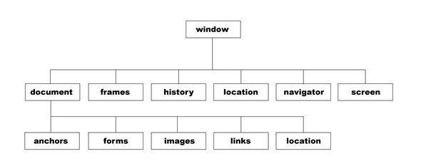

螃蟹 ---> 贝 壳
js ---> 浏览器
BOM（Browser Object Model 浏览器对象模型）

window是全局浏览器内置顶级对象
表示浏览器中打开的窗口（没有应用于window对象的公开标准，不过所有浏览器都支持该对象）
Window 对象表示一个浏览器窗口或一个框架。
在客户端 JavaScript 中，Window 对象是全局对象，所有的表达式都在当前的环境中计算。
也就是说，要引用当前窗口根本不需要特殊的语法，可以把那个窗口的属性作为全局变量来使用。
例如，可以只写 document，而不必写 window.document。
同样，可以把当前窗口对象的方法当作函数来使用，如只写 alert()，而不必写 Window.alert()。
除了上面列出的属性和方法，Window 对象还实现了核心 JavaScript 所定义的所有全局属性和方法。
-----------------------------------------------------------------------------------------------------
1、全局变量默认是挂在window下的
var a = 123;
alert(window.a)//123
2、window下的子对象
A、location
- window.location.href 当前页面的 URL，可以获取，可以修改（页面跳转）。
- window.location.hostname web 主机的域名
- window.location.pathname 当前页面的路径和文件名
- window.location.port web 主机的端口 （80 或 443）
- window.location.protocol 所使用的 web 协议（http:// 或 https://）
- window.location.search 请求参数（？后面的内容）
window.location.reload();
刷新页面的方法。一般情况下给reload()传递一个true，让他刷新，并不使用缓存。
缓存的东西一般为js文件，css文件等。
用这个方法可以让自己不能动的页面动起来了。刷新当前页面。
B、window.navigator
navigator.appName 返回获取当前浏览器的名称。
navigator.appVersion 返回 获取当前浏览器的版本号。
navigator.platform 返回 当前计算机的操作系统。
以上属性已经在逐渐被抛弃了。
一个新的属性将替代这些属性。
navigator.userAgent 返回浏览器信息（可用此属性判断当前浏览器）
判断当前浏览器类型的代码：
function isBrowser() {
var userAgent = navigator.userAgent;
//微信内置浏览器
if(userAgent.match(/MicroMessenger/i) == 'MicroMessenger') {
return "MicroMessenger";
}
//QQ内置浏览器
else if(userAgent.match(/QQ/i) == 'QQ') {
return "QQ";
}
//Chrome
else if(userAgent.match(/Chrome/i) == 'Chrome') {
return "Chrome";
}
//Opera
else if(userAgent.match(/Opera/i) == 'Opera') {
return "Opera";
}
//Firefox
else if(userAgent.match(/Firefox/i) == 'Firefox') {
return "Firefox";
}
//Safari
else if(userAgent.match(/Safari/i) == 'Safari') {
return "Safari";
}
//IE
else if(!!window.ActiveXObject || "ActiveXObject" in window) {
return "IE";
}
else {
return "未定义:"+userAgent;
}
}
C、history
history.go(1) 参数可写任意整数，正数前进，负数后退
history.back() 后退
history.forward() 前进
D、screen: 屏幕
window.screen.width 返回当前屏幕宽度(分辨率值)
window.screen.height 返回当前屏幕高度(分辨率值)
3、window下的弹框方法
alert() prompt() confirm()
4、定时器
超时定时器 间隔定时器
setTimeout setInterval
clearTimeout clearInterval
5、window.onload
6、window.onscroll
var scrolltop=document.documentElement.scrollTop||document.body.scrollTop; //兼容
7、window.onresize
练习
猜数字游戏
DOM（Document Object Model 文档对象模型）
DOM定义了表示和修改文档所需的对象、行为和属性，以及这些对象之间的关系。
当你想要改变网页行为的时候 你该怎么办呢？你不会用脚来踹网页或者用头来顶网页吧？这时候怎么办呢 ？
而你手中有javascript 这种工具！所以你就会考虑用javascript来改变网页行为，
而这时候你会想 我怎么改变呢？而我发现 网页原来有接口的，就好像你推车有车柄一样，你可以作用于车柄让它往前走，同样的 你也会作用于网页的接口改变他的行为，而这个接口就是DOM。
所以 javascript和DOM 就好像你的手和车柄一样，你不会用你的头去撞车柄，同样你也不会用CSS去改变网页行为！
当然手也不只是限于推车，还可以做别的事情，javascript也一样可以干别的事情！
DOM树

DOM操作
获取DOM节点
1、 document.getElementById(id名)
2、getElementsByTagName(标签名)
得到的是一个集合（不止一个，是一堆）
3、getElementsByName( ) 通过Name值获取元素，返回值是集合，通常用来获取有name的input的值；
注：1*不是所有的标签都有name值；
2*低版本的浏览器会有兼容问题；
4、 children属性，获得DOM元素的所有子元素；返回值是集合
5、parentNode属性，获得DOM元素的父级元素
6、getElementsByClassName(class名称)
但是：IE8以下不能用
7、ES5选择器：
document.querySelector () > 一旦匹配成功一个元素，就不往后匹配了
document.querySelectorAll () >>>> 强大到超乎想象;匹配到所有满足的元素, 支持IE8+
属性获取和操作
1、getAttribute( )获取元素的属性值，他是节点的方法！所以前缀必须是节点！
document.getElementById( ID值 ).getAttribute( )
什么是元素属性呢？ class就是元素属性，写在标签内的所有东西都是标签属性， 比如link的href比如img的src....都是元素属性。
元素自带的属性可以直接用 . 语法获取，但是自定义属性需要 getAttribute() 和 setAttribute( ) 方法
2、setAttribute( )设置元素的属性。同上；
有些小小的兼容性问题，低版本IE不兼容；
设置的属性永远都是字符串类型
3、removeAttribute( )删除属性；同上；
兼容性问题同上；
DOM元素类型(元素、文本和属性)
nodeObj.nodeName // 节点名称
/*
元素节点：标签名（大写）
属性节点：属性名称
文本节点：#text
*/
nodeObj.nodeType // 1 ==> 元素节点 2 ==> 属性节点 3 ==> 文本节点
1、网页换肤
2、隔行变色
操作DOM
增、删、克隆节点
创建节点
var oDiv = document.createElement("div");
克隆节点
clonedNode = Node.cloneNode(boolean) // 只有一个参数，传入一个布尔值，true表示深客隆，复制该节点下的所有子节点；false表示浅克隆，只复制该节点
插入节点
parentNode.appendChild(childNode); // 将新节点追加到子节点列表的末尾
parentNode.insertBefore(newNode, targetNode); //将newNode插入targetNode之前
替换节点
parentNode.replaceChild(newNode, targetNode); //使用newNode替换targetNode
移除节点
parentNode.removeChild(childNode); // 移除目标节点
node.parentNode.removeChild(node); //在不清楚父节点的情况下使用
childNode.remove() //IE不支持
练习
1、回到顶部
2、使用json动态创建表格
3、表格删除操作